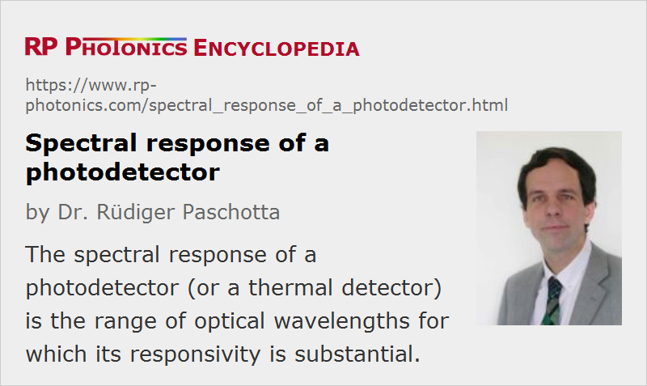

Spectral Response of a Photodetector
Definition: the range of optical wavelengths for which a photodetector is sensitive
German: spektrale Empfindlichkeit eines Photodetektors
Category: light detection and characterization
How to cite the article; suggest additional literature
Author: Dr. Rüdiger Paschotta
The spectral response of a photodetector is the range of optical wavelengths or frequencies in which the detector has a significant responsivity. There is no universally defined criterion for the minimum responsivity; it may, for example, be taken as one tenth of the maximum responsivity, or even much less. In other cases, a drop of at most 50% may be acceptable for an application. Due to that uncertainty, given specifications can vary even for the same device.
Note that the spectral range quoted for an optical power meter, for example, may be smaller than the spectral response: there may be wavelength regions where the detector reacts, but not with a calibrated response.
Typical Limiting Factors
Some typical limiting factors for the spectral response of photodetectors are:
- Many types of detectors, for example all photoemissive detectors and all semiconductor-based detectors containing a p–n junction, work only for photon energies above a certain level. That condition translates into some maximum optical wavelength.
- Such a limitation does not occur for thermal detectors, which therefore can exhibit a very broad and smooth spectral response. There, however, the spectral response may be limited by the wavelength-dependent absorption of the used absorber.
- Many detectors have an optical window, e.g. for protecting the light-sensitive area or for preserving a vacuum inside the detector, and that window has a limited wavelength range with high transmissivity.
- Sometimes, the spectral response of a photodetector is intentionally limited with an optical filter, because a response to certain other wavelengths is undesirable for a particular application. In some cases, one wants to avoid degradation effects caused by short-wavelength light (e.g. ultraviolet light).
For a given material, e.g. of a photocathode, the spectral response may substantially vary due to different factors, e.g. the applied thickness of a layer, an additional reflector or details of the material fabrication process.
Questions and Comments from Users
Here you can submit questions and comments. As far as they get accepted by the author, they will appear above this paragraph together with the author’s answer. The author will decide on acceptance based on certain criteria. Essentially, the issue must be of sufficiently broad interest.
Please do not enter personal data here; we would otherwise delete it soon. (See also our privacy declaration.) If you wish to receive personal feedback or consultancy from the author, please contact him e.g. via e-mail.
By submitting the information, you give your consent to the potential publication of your inputs on our website according to our rules. (If you later retract your consent, we will delete those inputs.) As your inputs are first reviewed by the author, they may be published with some delay.
See also: photodetectors, responsivity
and other articles in the category light detection and characterization
|  |
If you like this page, please share the link with your friends and colleagues, e.g. via social media:
These sharing buttons are implemented in a privacy-friendly way!